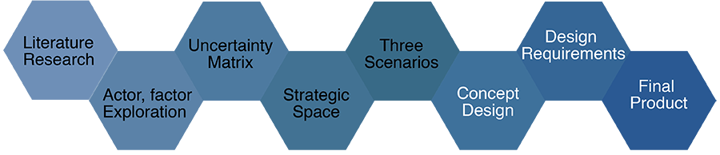
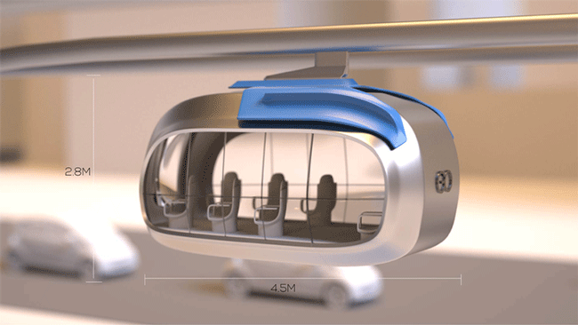
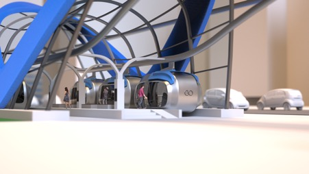
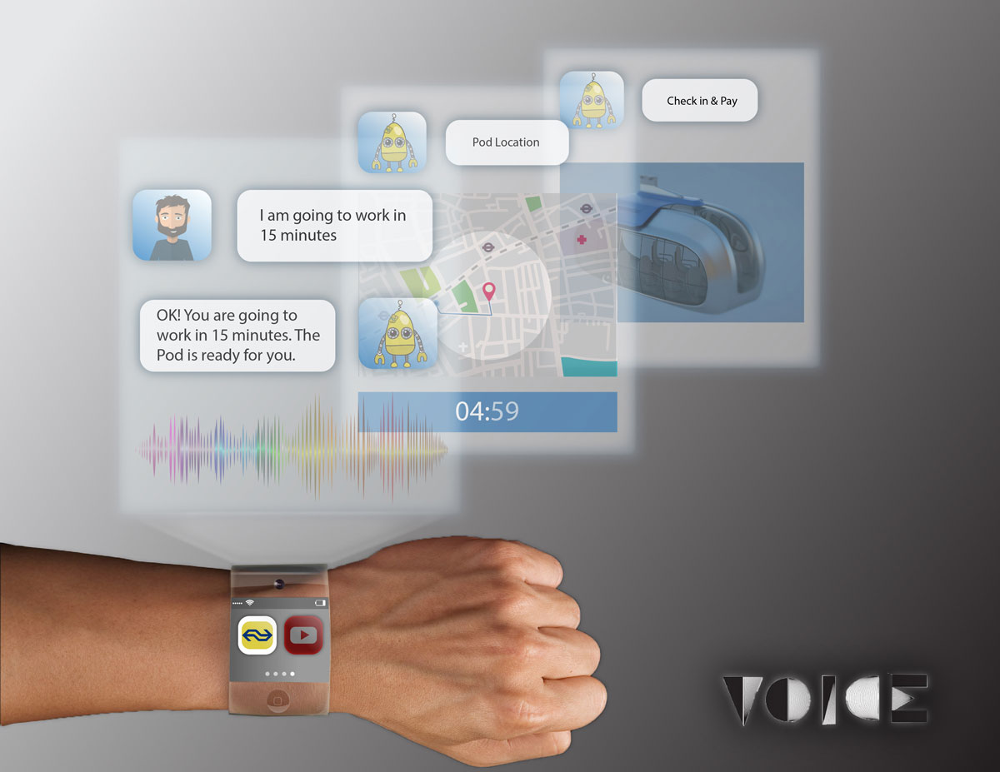
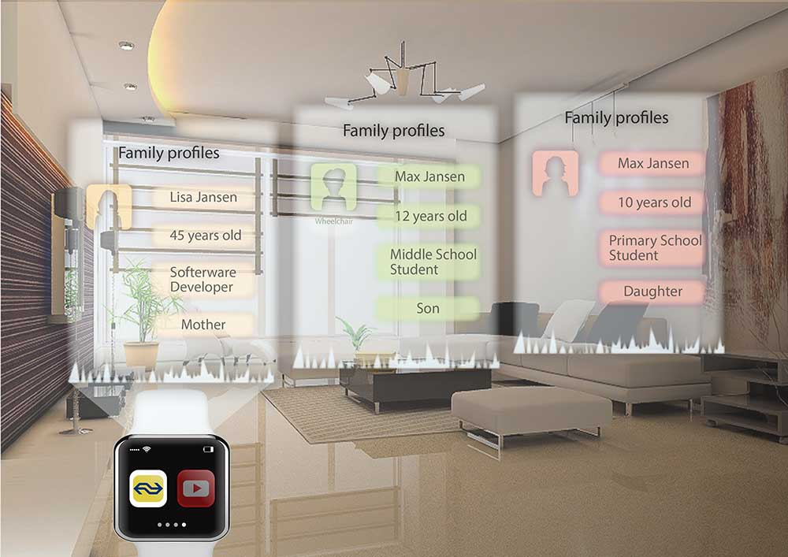
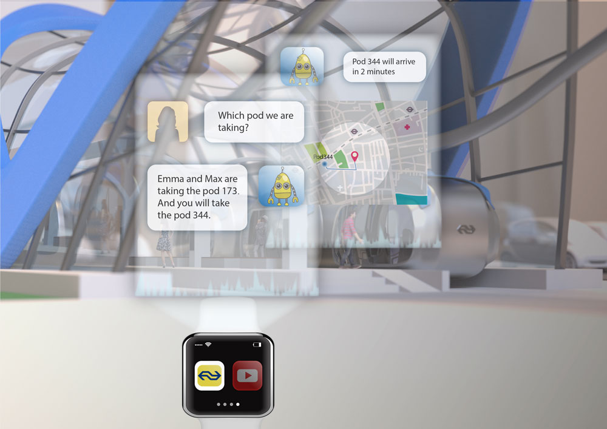

Introduction
This project showed the process of developing a new means of transport for the Dutch Railways in Amsterdam in the year 2050. This product is the answer to a focal issue which was indentified in the inital phase of the project,namely how to support a predicted increase in individualizaiton. By exploring the actors and factors involved, mapping their relationships, and plotting them in an uncertainty matrix, a strategic space is developed. This leads to three scenarios, one of them is chosen as the setting in which the design concept is developed. A systematic approach is then taken in which first a set of requirements is formulated, after which the design process and the final concept is shown.

Design Question
In this project, we focused on the sector "Traffic and Transport", more specifically urban mobility in 2050. Through literature research, we defined the questions we intended to answer for the actor, Nationale Spoorwegen(NS) which is as known as the Dutch Railways. The Design question is:
How can the NS support the increasing individualizaiotn while making their service accessible to all in the Randstad?
Uncentainty Matrix & Strategic Space
The location of factors describes the level of uncertainty (probability of happening) and importance (impact in the future). In order to determine the location of factors, factors are analysed in terms of Delphi study, expert opinion and trend analysis.
The driving forces, both uncertain and important, are used to create the strategic space. The very certain important factors, TINA’s, are inevitable and will appear in all scenarios. Uncertain and important factors are used to dress up scenarios and take the reader into the future
Scenarios
Based on strategic space, we developed three scenarios.The first scenario(Everything Green) is located at the vertical axes. In this scenario liveability is favored over accessibility, i.e. increased connectivity through infrastructure. The second scenario(Don't Touch My Data) is located along the horizontal axis and focuses on privacy. Finally, the third scenario(At the Speed of Light) combines convenience and accessibility. This means people are fine with giving up some privacy in order for their life to be more convenient.
By means of a group discussion it was decided that the last scenario, At the Speed of Light, is chosen to be the scenario in which the product concept is developed. It is the most realistic one and in our opinion also the most interesting one.

Everything Green

Don't Touch My Data

At the Speed of Light
Product Design
In order to develop a product concept within the scenario (At the Speed of Light), an overview of the new, future context, is given first. Given this future context and the chosen scenario, we defined the requirements that the concept of a new means of transport should adhere to. Based on systematic approach analysis, we chose monorail to develop further.
- Design Concept
Connected
No need to transfer between system
Time
Go fast or don't go at all
Technology
Wheels are so 2016
Individualisation
Go when you want to go
Design
Everyone should travel in style
Accessibility
Everyone needs to go
- Station Design
The big idea of station design was to try and not use more space than is currently used by the public transports (trains and trams). One of the challenges was making a solid design for a bigger station, like Amsterdam Central, The Hague or Rotterdam. For this example, Amsterdam Central station was used. We went through 2 interaction for station design, the final station is as following:
-Go Design
Go with sliding door design and has 8 turnable seats, together with the flexible and open infrastructure could help to fit in any future city.

Render of GO pod with measurements

Render of quickstation

Render of quickstation in city

Render of Go in WTC

Render of Go in City Center
- Smart Watch App Design
People can book tickets instantly via voice input from their smart watch. Go app has recorded the routines of users. Users just need to simply say “I am going to work in 15 minutes”, Go App will repeat this sentence as a feedback, once it has received the booking requirement from users and books a suitable pod automatically for users. And it can be paid wirelessly.
The Go App will save user’s family profiles automatically and make pod plans for users and their families according to their routines. Also, Go App will provide navigations intelligently to users. Go App also provides pod informations in detail to users, such as the location, waiting time and price.

Illustration of voice interaction between user and device

Illustration of user’s profiles saved by Go App

Illustration of pod informations by Go App